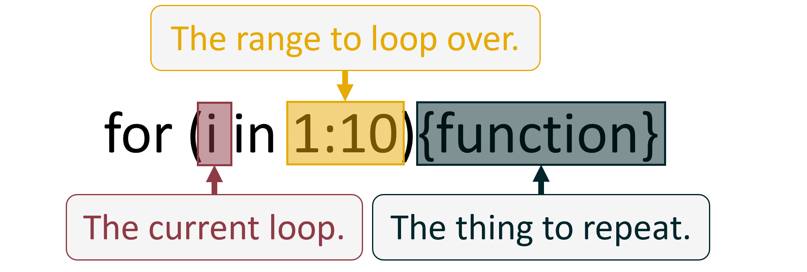

Code
#manually write out a list of numbers from 1 to 10
my_list_numbers <- c(1,2,3,4,5,6)
#print these numbers
print(my_list_numbers)[1] 1 2 3 4 5 6July 17, 2025
Here’s the scene, you’ve started on your R coding journey, know how to create an object, how to discern between vectors and lists, maybe even written a few short scripts. Then all of a sudden your professor/teacher/boss pulls a fast one on you and introduces for loops. For loops? What are they? How’s that work? Whats going on? You struggle through and complete the task, but didn’t quite understand what was going on when they explained it to you… Well at least that’s how it went for me.
In this post I wanted to quickly talk about for loops in R, specifically, I’m looking to cover:
Realistically, all a for loop does, is say “do this bit of code again and again until I say stop”. Lets imagine a completely unrealistic scenario where your boss asks you to write out the numbers 1 to 10. Why are they asking you to do this? I don’t know, that’s not really the point. So you do it:
[1] 1 2 3 4 5 6Okay, clearly this is a dumb way to do this, I’m not even going to write out the whole thing. Instead, lets create our first for loop:
[1] 1
[1] 2
[1] 3
[1] 4
[1] 5
[1] 6
[1] 7
[1] 8
[1] 9
[1] 10In this simple (very unrealistic) example it seems pretty straight forward, but I think we can explain things a bit more. The “For Loop” is usually denoted like this; for (i in n){f} where:

Everything that isn’t highlighted is just the syntax of the for loop, but that doesn’t mean it isn’t also important to understand. Case and point, these next two code chunks will execute identically and produce the same results, even if they look a bit different.
From now on I will be writing our for loops using the second format because I think it is easier to follow, but just remember that this doesn’t change how the code runs just how it looks. Time to dive in!
“i” can be anything, which is not super helpful (sorry). What might be helpful is just seeing an example. This code:
will produce the exact same result as this code:
We use “i” as an iteration counter (hence usually getting called “i”) that keeps track of what loop we are on with respect to n. For our example above, n is 10. So on the first loop “i” is 1, on the second loop “i” is 2, on the third loop “i” is three…, all the way until “i” is 10. At that point, the for loop finishes. Hopefully it is now intuitive to see how print(i) produces the numbers it does.
“n” is the range of the loop. “n” tells the for loop two things;
In our example above, n is 10. But wait, that’s not quite right, n is actually 1 to 10. This is an important distinction to make because it is usually one of the first places we make errors. Lets take a look:
As you can see, when “n” is just 10, then the output is only the value “10”. This is because the range (AKA length) of “n” was only 1. An easy way to check this is to use the length() function:
So the first super important thing to remember is that “n” is a range, it has a point you want to start at, and a point you want to end at. The second super important thing to remember about “n” is that it directly tells the specific value to start and end at, and therefore determine the value that “i” is going to be. Here is a simple demonstration:
[1] 15
[1] 16
[1] 17
[1] 18
[1] 19
[1] 20
[1] 21
[1] 22In this case, we started at 15 and ended at 22. So on the first loop, “i” is 15, second loop “i” is 16, etc.
The last super important thing to remember about “n” is that it does not have to be numeric! It took me a while to realise this, but it can allow you to do some cool things. Here is another quick example:
[1] "PotatoSalad"
[1] "FishFingers"
[1] "Im... Kinda Hungry"This does throw a minor curve ball though. Did you notice that the code is now for (i in n_range), there is no “1:” in front of “n_range”, this is just because the object “n_range” already has a range of elements that we can loop over. Lets use length() again to show this:
If you can remember these core things about for loops you will get very, very far with them. So to summarise. “n”:
The final part of a for loop is by far the biggest part of the code, but it is ironically very straight forward to understand if you have a little bit of an R background. The function or functions inside a for loop are the exact same functions that you would be using outside a for loop! The hard part to figure out is where to place that stupid “i” value. Personally, I haven’t been able to find a method of explaining where “i” goes other than by being very conscious of the purpose of your for loop. Start with simple and short loops and work your way to more complicated tasks, it will come naturally. Generally you will find that “i” only needs to be placed in a few key locations, however if you miss a spot, happy debugging!
Want to learn more about For Loops from the professionals? Check out the Iteration chapter in R for Data Science!
So far all I have done is demonstrate a very silly example of a for loop. The kind of example that really doesn’t give you a compelling reason to learn how to write a for loop. The kind of examples I used to read that made me not bother learning for quite a while. So instead of demonstrating a million more half baked for loops lets just cut to chance and see how I implement a for loop in my day to day. (If this blog post does compel you to go on the learning journey - the link above will fill the gaps in what I’ve written )here.
Something I do almost every day is make maps. Usually fairly simple maps, often they show sample site locations, or coral monitoring locations, or the size of a seagrass meadow, things like that. These maps are included in static word documents and are often needed over large chunks of areas. However, the combination of a large study location, a high quantity of sample site locations, and a static output (can’t put an interactive map into word), means that instead of one large map, I need to create lots of small maps for each little area.
This here, is an absolutely prime example of a compelling reason to use a for loop. To give you some numbers, in one of my projects I need to create 67 maps. If I was to manually write out the code for each of those 67 maps, my script would have 3886 lines of code just dedicated to creating the maps. Instead, I use a for loop and pull 67 maps out of less than 100 lines of code. Not only that, but I also reduce the chance of an error sneaking into my code by 67x.
Below is a simplified mock up of the code I would use for this, noting that I have used made up sampling locations for data privacy, and created interactive maps for your enjoyment. We will see the full code in action first, then break it down step by step.
#read in some example data that I made up
example_sites <- st_read("example_data.gpkg")
#extract an object that contains the three unique locations we are looking at
locations <- unique(example_sites$Location)
#create a list that will store my maps
list_of_maps <- setNames(vector("list", length(locations)), locations)
#initialize the for loop
for (i in locations){
#filter our dataset
sub_set_of_sites <- example_sites |>
filter(Location == i)
#create a simple map
single_map <- tm_shape(sub_set_of_sites) +
tm_dots(shape = "Site", size = 1, col = "Site", fill = "Site") +
tm_text("Site", size = 2, ymod = 1) +
tm_layout(legend.show = F)
#add each map to the list
list_of_maps[[i]] <- single_map
}Here is how one of the maps looks:
Time to take a closer look at whats happening here.
st_read() from the sf package to load in my dataset. For the purposes of this post, we don’t need to worry about this package and its functions. Check out my other posts for more details on this area. What I will do here though, is show a sneak peak of the data.| Location | Site | X | Y |
|---|---|---|---|
| Alligator Creek | Site 1 | 147 | -19.3 |
| Alligator Creek | Site 2 | 147 | -19.3 |
| Alligator Creek | Site 3 | 147 | -19.3 |
| The Strand | Site 1 | 147 | -19.2 |
| Town Common | Site 1 | 147 | -19.2 |
| Town Common | Site 2 | 147 | -19.2 |
| Town Common | Site 3 | 147 | -19.2 |
| Magnetic Island | Site 1 | 147 | -19.2 |
| Magnetic Island | Site 2 | 147 | -19.2 |
tmap package, however there is a wide range of options available. Maybe I will write a post on mapping with tmap one day… we will see.In my case, I have put the map into the list that we defined earlier. Notice that because I named each item in the list, I can then place the map under the correct item using “i”.
To start writing your own for loops all you really need to do is start giving it a crack. Although, I do remember starting the journey and having trouble finding good opportunities. Here are hopefully some good points to get you going:
Once again, I will link to the Iteration chapter in R for Data Science as this is the most comprehensive place to go for learning something new in R the right way.
As always, I like to finish my posts with an acknowledgement of caveats. With respect to this post, please remember to take a random internet stranger’s opinion with a grain of salt, refer to the linked educational resources, and think critically about the things you are learning and if they make sense to you. With respect to for loops, don’t over do it with your new power! It is often cleaner and simpler to write two or three separate for loops rather than one complicated one. You can even sometimes cause memory overflows and crash your computer when writing loops for large datasets and using poor memory management techniques.
Finally, the thing I have been alluding to this entire time, as of writing this post I currently try my best to avoid using for loops! Instead, I have been progressing in my journey of learning to use vectorised functions. To find out how you can take the next step from for loop to vectorised function, check out this Loops and Vectorised Functions blog post!
If you like the content, please consider donating to let me know. Also please stick around and have a read of several of my other posts. You'll find work on everything from simple data management and organisation skills, all the way to writing custom functions, tackling complex environmental problems, and my journey when learning new environmental data analyst skills.
A work by Adam Shand. Reuse: CC-BY-NC-ND.
adamshand22@gmail.com
This work should be cited as:
Adam Shand, "[Insert Document Title]", "[Insert Year]".